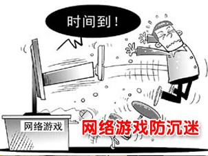

玩游戏的孩子，"男的都变小偷，女的都变三陪小姐".
可以提一提我们的专家，和相关部门了。
玩家们最大的特点，就是不分青红皂白只要是看到对游戏不利的就大骂一通。当然骂一通虽然不能解决问题，起码还是能出口恶气。现在我们来做一个区分，看看哪些我们才应该骂，哪些不该骂，哪些不但不该骂，更应该赞同。
先说说两个对游戏管理的相关部门，新闻出版总署与文化部，注意一点，前面那个单位是新闻出版总署，而不是新闻出版署，前者是后者的升级版，后者是副部级单位，加了总字变成了正部级，才与文化部平级。我们暂且不管这两个部委之间的事，只说游戏。事实上他们都该算是中国网络游戏产业的盟友，他们出台的相关政策，鼓励也好，限制也好，其实都是为了这个产业的发展。
我们都知道社会无法改变失败的教育就将游戏做为替罪羊，因此作为游戏的主管部门承受的社会压力就很大，防沉迷系统也就是在这个情况下出台的。因为许多家长甚至到了要去新闻出版总署门口静坐的地步，理由是游戏害了他们的孩子而国家为什么还要发展游戏。我们都知道这个理由根本就不成立，孩子出了问题，家庭教育失败要占90%，但中国家长的特点是自己从不认错。总之在这么强大的社会压力下，主管部门不做些限制是不可能的，现在说起那个防沉迷系统，我们会发现一个非常好笑的事实。
防沉迷系统被玩家们轻易绕开，因为直接用成年人身份证注册就可以。但如果要把这一点卡住，就需要从公安部门那里把系统连上，这个在技术上很难实现。其次，即便能实现，由于是通过网络注册和进行游戏，也只能由家长进行监督才行。

昨日之歌：推出前让玩家充满不安的“防沉迷系统”，后来我们都知道是个笑话。
孩子们本来就是家长的不作为才到了今天，家长把一切责任全推给了游戏商和主管部门，但到头来开发的所有限制措施依然离不开家长的监督，那么既然还需要家长监督，再搞那些什么防沉迷系统还有什么意义呢？
这正是最荒唐最可笑的地方，但主管部门不可能把这些对那些不负责的家长们直说：“还是你们的事。”他们只能花费资金和时间去搞什么防沉迷系统来降低家长们的愤怒。
这其实是对游戏产业的保护，可谓用心良苦。但很多玩家偏就不想一想其中根源，你破解就破解了吧，谁都知道那个系统形同虚设，别说出来就行了。他们偏要得意洋洋地在网上宣布如何轻松解决了防沉迷系统，把一心想帮助游戏产业的版署给卖了，你这让版署如何向社会交代？最后使得寇司长还得亲自出面否认防沉迷系统被破解。
如果我们平静下来，稍微注意一下新闻，就会看出相关部门在对我们这个行业监管时的轻重程度。
2009年文化部办公厅于10月28日印发了《关于查处第七批违法游戏产品及经营活动的通知》，下面是其中的段落：
|
这篇报道的下面还附上了188家违法游戏运营企业名单。
声势浩大吧？我们再看看另一篇报道，还是文化部的。
2010年1月18日上午，文化部首次发布《2009年中国网络游戏市场白皮书》，其中有这样两段：
从市场竞争格局来看，截止到2009年年底，全国共有499家网络游戏运营企业。2009年网络游戏运营商市场份额排名发生调整，腾讯取代盛大成为第一名，盛大和网易分居二、三名，前三名总共占据52.9%的市场份额。
排名前十二的企业依次为腾讯、盛大、网易、搜狐畅游、完美时空、巨人、久游、光宇华夏、九城、金山、网龙和世纪天成，他们总共占据中国网络游戏市场87.7%的市场份额。
看上去是不是很有趣？500家网络游戏运营企业，前12名占据了87.7%的市场份额。而在上一条新闻中查处的188家企业里根本就没有这12家。也就是说所有的查处都是在剩下那不到13%的市场份额中进行的。前面这12巨头是这个市场的根基，保住这87.7%，就等于保住了网游市场，也保住了绝大多数玩家的利益。其他怎样折腾都没关系。
以上两个例子可以看出来，版署也好，文化部也罢，很多看上去严厉的政策和行动更多是为了保护游戏产业，尽可能不触动到市场的基础。而玩家却完全不能体会其中的良苦用心。
对管理部门来说，对产业不限制，要承受社会压力。限制，产业会受影响。尽可能保住产业做适当的限制，还要被不理解的玩家群体骂。所以说真正做事的官员也够难的。